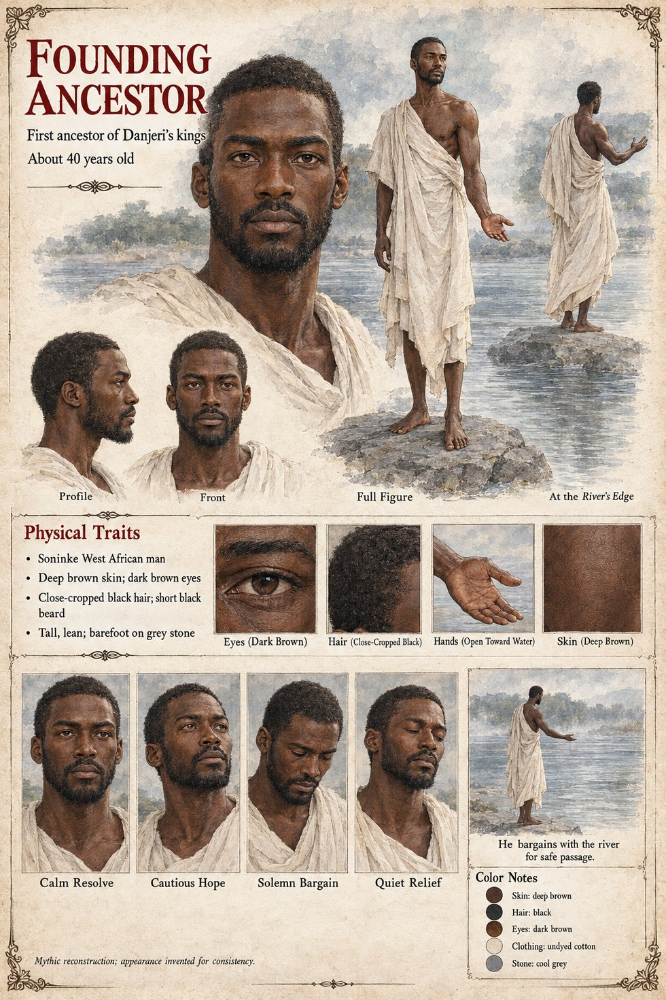

Founding Ancestor
First ancestor of Danjeri's kings · bargained with the river for the right to cross · unnamed · about 40 on his sheet
He never appears in the manuscript, and nothing is said of him beyond a bargain. The kingdom's ruling line traces itself, through a spoken genealogy kept by a hereditary caste of court historians, back to a founding ancestor who had — in the account, at least — bargained with the river itself for the right to cross it safely, a bargain on which the kingdom's whole religious life has since been built. The Ancestor Court beside the palace is where he was said to have stood on the bank and made his bargain with the water, and every king of Danjeri since has had to stand there in his turn while the senior Recounter recites his line back to that moment without pause or error.
The bargain keeps turning up as a balance. In the beer-houses of Kambaso it becomes the second theory of the palace dog: that the founding ancestor's bargain had left a balance, that the water had been owed something and had paid it back in the only coin it had. A Bantaran caravan-master's joke, the river's long debt, is a drunk's rendering of the same idea. In Chapter Fourteen the place of the bargain is a flat grey stone at the river's edge a mile below the ford, which the Recounters keep swept and which no one else visits: the faith held that the first ancestor had stood on it to ask the water for passage, and that the water had agreed at a price no living person could name. Fode has stood on it four hundred times. On the fifteenth night of Mavren he reaches it with a plan, and weighs out four hundred weights of gold-dust on it by starlight to Sira.
The manuscript gives him no name, age or face, and does not say what the price was. The sheet's title strip, First ancestor of Danjeri's kings, and its age of about 40 are its own, as are the tall, lean build, deep brown skin, close-cropped black hair, short black beard, dark brown eyes, undyed cotton drape and bare feet on grey stone; a line at its foot says it is a mythic reconstruction; appearance invented for consistency. Its caption At the River's Edge, its scene He bargains with the river for safe passage. and its panels Calm Resolve, Cautious Hope, Solemn Bargain and Quiet Relief are the sheet's alone.
“bargained with the river itself for the right to cross it safely”